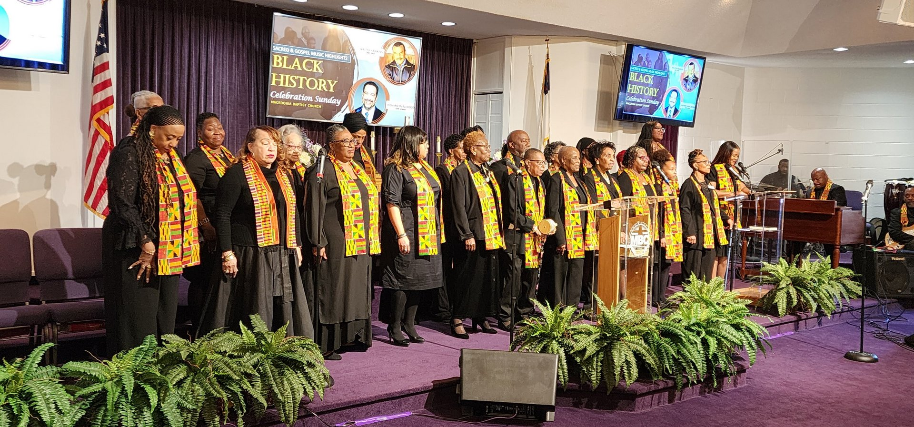

In 1908, at the residence of Mrs. Amanda Johnson, Nauck Heights, now 22nd and South Monroe Streets, a few Christian people held prayer meetings regularly from 1908 until 1911. The group which was composed of Bonder and Amanda Johnson, Gus Mitchell, Ella Mitchell, Josephine Bankhead, Reverend Hugh Bankhead, Matilda Grayson, Edward Walker, Robert Commodore, Sr., Bennie West and Levi Green, decided to organize a church.
They purchased a lot and erected a small building which was set aside in 1911 by Reverend Frank Graham of Mt. Zion Baptist Church and Reverend Brass Clark of Alexandria, Virginia, as the Macedonia Baptist Church. Reverend John Gilliam was called as the first Pastor.
In 1912, Reverend Gilliam held the first baptizing in Four Mile Run with the following candidates: Martha Mitchell, Samuel Johnson, Clara Green, Effie Commodore, Robert Commodore, Viola Mitchell, Beatrice Johnson, Naomi Johnson and David Johnson. The Church then elected the following officers: Bonder Johnson, Chairman of the Deacon Board, Edward Walker, Chairman of the Trustee Board, David Johnson, Church Clerk. Reverend Gilliam was called to a larger church and was replaced by Reverend Bernard Botts.
The Macedonia Baptist Church was founded in a very humble way, yet with the highest ideals for which the Church stands today. Once a week services were held in the little Church until the membership felt the need to expand. They then purchased the old Peyton Hall at Nauck Station, the site of the present Church during the time of Reverend Botts’ pastorship.
Reverend Pinkney, Reverend Botts successor carried the Church on. Using his wonderful teaching ability, he aroused great interest in the Sunday School and increased its membership. He was then called to another Church.
Reverend Richardson then accepted the pastorship for a short time. It seemed that the Church was having a hard time to survive with the steady stream of pastors. While searching for a successor to Reverend Richardson, Reverend Carter Taylor came to their rescue and served as pastor until they made a decision. With his spiritual help and guidance, the church decided to call Reverend Owen Hawkins, who led the Church until 1925. Reverend Sherman W. Phillips of Falls Church, Virginia was then called. Under his spiritual and helpful supervision, the Church prospered and continued to grow.
The officers at that time were Deacon Ralph D. Collins, Sr., Chairman of the Deacon Board, Brother Archie Turner, Chairman of the Trustee Board, Sister Naomi Bias, Church Clerk and Brother John Stewart, Superintendent of Sunday School.
Soon after Reverend Phillips came in 1925, a joint revival was carried on by Reverend Phillips and Reverend Claggett Ward. This increased the membership of the Church.
On September 18, 1927, the cornerstone was laid and the old Church was erected. In the ensuing years the Church has carried on many successful activities. Revivals, raffles, concerts and programs have been held in the interest of furthering Christian Fellowship.
During this time Deacon Ralph D. Collins, Sr. was Chairman of the Deacon Board who was succeeded by Deacon Oliver McQuinn and then the mantle fell on the shoulders of Deacon Lawrence Johnson, Sr., the present chairman. The Trustee Board has prospered and carried on its duties under the chairmanship of Brother Gus Mitchell, Brother Archie Turner and Brother Samuel Scott, the present chairman.
The following persons have served as Church Treasurer: Brother Archie Turner, Brother Frank Lee, Brother Alfred Taylor, Sr. and Deacon Costello Harris, the present chairman. The Church Clerks through the years have been Brother David Johnson, Sister Naomi Johnson Bias, Sister Verna Taylor Dean and Sister Pauline Johnson Ferguson, the present clerk.
The Sunday School has steadily marched forward and greatly increased in membership under the leadership of Brother Bonder Johnson, Brother John Stewart, Sister Callie Johnson, Brother Edgar Bass, Brother Pete Hackett, Sister Florence Terry and the present superintendent for the past 22 years, Miss Valois V. Gaines.
The Senior Choir has been ably assisted through the years by the following pianists: Brother Frye, Sister Ethel Johnson, Sister Suzanne Walker, Sister Doris Harris and Sister Lottie Bellamy. The Choir has been under the leadership of Sister Mary Ellis Williams, Deacon Henry Dean and now is led by Brother Arthur Henderson.
A Junior Choir was organized under the sponsorship of Sister Beatrice Smith with Sister Audrey Taylor Coachman as pianist.
The following singing units have been added to our Church in recent years. The Men’s Chorus, was organized by Deacon Robert Commodore, who served as President. He was succeeded by Brother Dowdell Tillman and then Deacon Henry Dean, the present leader. The Gospel Chorus was organized by Sister Beatrice Smith and Sister Mattie Dunn as pianist and Brother Alfred Taylor, Jr., as President. She was succeeded by Sister Betty B. Green as pianist. Sister Florence Terry was the organizer and directress of the Bells of Joy with Sister Yvonne Lowe Smith as the pianist.
The Church has done well in furthering God’s Kingdom. It has sent out five sons: Reverend Edgar Bass, Reverend C. I. Rogers, Reverend Herman Williams, Reverend Spicer Peterson and Reverend Albert Norris. Another son, Reverend George O. A. Lowe, Jr., is now serving in the armed forces of our country.
From its humble beginnings the Church has marched steadily on. Various clubs have been organized to help keep spiritual interests and activities at a high level. These clubs are: The Willing Workers, Mrs. Mary T. Taylor, President, The Never Idle Club, Mrs. Pauline Ferguson, President; The Nurses Unit, Mrs. Mabel Commodore, President, The Senior Usher Board, Mr. Edgar R. Cowan, President, Usher Board No. 2, the presidents being Brother Isaac Brooks, Sister Mary Smith and the present President, Brother James Duson. There was also the Deacon’s Club, led by Deacon Beret White. The Deaconess Board’s officers have been Sister Viola Johnson and Sister Ruby L. Taylor, the present Chairman.
The clubs recently added to the Church include: The Harmony Club, Sister Gertrude Williams, President; The Ever Ready Club, Sister Isabelle Butler, President; The New Members Club, Deacon Costello Harris, President; The Flower Club, Sister Elnora Roberts, President; The Pastor’s Aid Club, Sister Beatrice Smith, President and the Junior Ushers, organized by Brother Isaac Brooks with Sister Gracie Chambers as President.
Some of the older members who have continued faithful through the years to the present time are: Sisters Aggie Thornton, Ruth Turley, Lucinda Lowe, Nora Taylor, Luvinia Green, Emma Moore and Worthy Arnold.
The Church has prospered under the leadership of Reverend Phillips, that since 1946, $36,000 has been spent on remodeling and improvements, in addition to the current expenses. With our annual rally in 1952, the Church cleared its mortgage and is now free of debt.
On June 1, 1968, after 43 years of faithful ministerial service, Reverend Phillips was called to eternal rest.